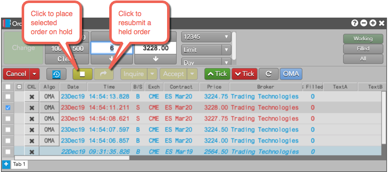

You can place an order on hold from the Order Book widget. When you place an order on hold, you can change it as you would any other order. A held orders remains in the widget until it is resubmitted or deleted. To put on order on hold, click ; to resubmit a held order, click .

Placing a TT order type order on hold pauses the algo and places all working child orders on hold. Resubmitting a TT order type order resubmits its child orders and resumes the algo's behavior. Placing a TT order type order on hold is limited to orders with a status of Waiting, Pending Trigger, or Working.